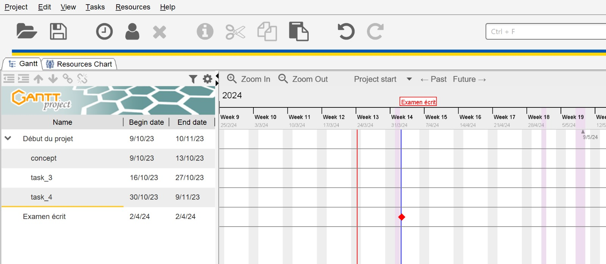

Sommaire
- Introduction
- Préalables à la conception
- Conception et développement
- Résultat : démonstration de l'appli
- Conclusion et perspectives
Notes : au sommaire plus détaillé :
Présentation en 3 parties :
Introduction
1 Préalables à la conception et au développement :
Expression de besoins
Problématique
Objectif de l'application
Cible et acteurs
Étude concurrentielle
Fonctionnalités
2 Réalisation du projet :
Gestion et suivi du projet
Maquettage
Conception
Technologies choisies
3 Résultat :
Démo
Conclusion / Perspective
Introduction
Quel est le but de cette présentation ?
- faire le point sur mes connaissances acquises dans le cours
- montrer mon projet et comment j'ai appliqué ces connaissances
Donc à chaque étape :
- je résume la compétence, en quoi elle consiste
- j'illustre son application dans mon projet
Présentation orale projet pour examen final
Formation
Des anciennes versions de la présentation sont sur Google Slides :
Sommaire
Présentation en 3 parties :
- Introduction
- 1 Préalable à la conception et au développement :
- Expression de besoins, Problématique, Objectif de l'application, Cible et acteurs, Étude concurrentielle, Fonctionnalités
- 2 Réalisation du projet :
- Gestion et suivi du projet, Maquettage, Conception, Technologies choisies
- 3 Résultat :
- Conclusion / Perspectives
Introduction
Quel est le but de cette présentation ?
- faire le point sur mes connaissances acquises dans le cours
- montrer mon projet et comment j'ai appliqué ces connaissances
Donc à chaque étape, deux parties :
- je résume la compétence, en quoi elle consiste
- j'illustre son application dans mon projet
Expression de besoins
Expression de besoins
- ...
- avoir une appli qui permet de prendre des notes privées
Problématique
Problématique :
- par ex. : si on n'a pas l'application, on va passer beaucoup de temps
- pour chercher/trouver l'information
- ...
Objectif de l'application
Objectif de l'application
- Sécurisé
- Confiance
- Privé
- Facile
- Rapide
- Possibilité de partager certaines notes
Cible
À qui l'application est-elle destinée ?
- L'application est destinée à différents types de personnes :
→ qui veulent garder une trace de leurs activités
→ qui écrivent
- soignant
- secrétaire
- chercheur
- compositeur, écrivain
- explorateur, navigateur de bateau
- sportif
- étudiant
- n’importe qui voulant tenir un journal
Acteurs
Qui sont les acteurs qui utilisent l'appli ?
- Qu'est-ce qu'un acteur ?
- Deux types d’acteur :
- les personnes qui écrivent
- → peuvent être catégorisées en différents types
- l’administrateur du site
- → gère le site
- → répond aux questions ou problèmes
- → administre les différents types d’utilisateur
et leurs ressources : catégories, templates
Étude concurrentielle :
Étude concurrentielle :
- tableau sur une slide avec avantages et inconvénients
- permet de définir comment se situe l'application dans l'univers de ce qui est disponible
- Jour de bord, outil de rédaction, se situe dans un milieu concurrentiel chargé
- je choisis 3 exemples de concurrents de Jourdebord :
- Google Docs
- Notion
- 750words.com
Fonctionnalités
La méthode MoSCoW :
- moyen de prioriser les tâches à accomplir
- termes plus parlants pour communiquer avec le client
- M must : doit être fait, important mais pas indispensable
- S should : à faire mais app livrble même si non réalisé
- C could : à faire si on a le temps
- W won't : ne sera pas fait -- cette fois-ci
Fonctionnalités Must have
Must have :
- Authentification, inscription, login, logout
- Création de catégories, consultation, mise à jour, suppression
- Création de texte, consultation, mise à jour, suppression
- Recherche de texte :
- recherche par date, par mot ou phrase
- tous les textes, textes d’une certaine date
- résultats ordonnés par date de création, date de dernière mise à jour
Fonctionnalités Should have
Should have :
- Affichages de texte :
- afficher le texte par heure, jour, semaine, mois, total
- afficher texte complet, fragment de texte
- Partage de texte : rendre un texte public avec une URL
- Statistiques de texte :
- nombre de mots par jour, semaine, mois, total
- mots les plus utilisés
Fonctionnalités Could have
Could have :
- Templates
- Nuages de mots
- Localisation : interface de l'application en autre chose que français
- L'admin ne doit pas pouvoir lire les textes des autres !
Fonctionnalités Won't have
Won’t have :
- Attribution automatique de catégories
- Création automatisée de templates
- Badges et gamification :
- badge vous avez écrit 1000 mots, vous avez commencé à écrire tôt, vous avez écrit tous les jours depuis 1 semaine, ...
Gestion de projet
1 Work Breakdown Structure
2 Gantt

qu'est-ce qui le rend utile
- en général
- coordination d'une équipe
- prévoir, anticiper, gérer problèmes, retards
- qu'est-ce qui l'a rendu utile pour moi (tout seul)
- planifier mes développements
- être réaliste
- éviter d'avancer à l'aveugle
3 méthode Agile
- qu'est-ce que la méthode, et laquelle ?
Maquettage
permet, avant de commencer la conception et le développement,
- de répondre aux besoins et attentes du client
- de faire des itérations rapides avant de s'engager sur un développement coûteux
- au client de savoir à quoi s'attendre
1 zoning : zones des pages, header, footer, etc
2 wireframes : squelettes de toutes les pages, sans contenu ni styles
3 (mini) charte graphique : styles avec couleurs et polices
4 maquettes : à quoi ressembleront toutes les pages
5 prototype : une maquette interactive
Outil utilisé pour faire tout ça : Figma
- un outil de conception collaboratif avec les parties prenantes (stakeholders) :
- designers
- autres développeurs
- product owner
- client
Lien sur la maquette :
Conception
on utilise deux méthodes de conception
1 Merise : procédural
- 1.1 MCD modèle conceptuel de données
- règles de gestion
- dictionnaire de donnees
- schémas :
- ...
- 1.2 MLD modèle logique de données
- liste de relations
- 1.3 MPD modèle physique de données
- schéma
2 UML : orienté objet
- faire le lien avec Symfony...
- 2.1 Diagramme de cas d'utilisation
- 2.2 Diagramme de séquence
- 2.3 Diagramme de classe
Technologies choisies
PHP - langage
Symfony - framework backend
- à quoi sert un framework ?
- sécurité
- bonnes pratiques
- évite de réinventer la rajouter
- maintenabilité
Bootstrap - framework CSS donc frontend
MySQL - base de données relationnelle
outils de développement :
- git, VS Code, shell : Bash ou Powershell, Windows et Unix
Démo
lien vers mon appli sur mon laptop:
lien vers l'appli en ligne:
Conclusion / Perspectives
Conclusions :
- j'avais 2 objectifs avec ce cursus :
- 1 quand quelqu'un me demande :
- Pourrais-tu me faire un site Web ?
- pouvoir répondre sans hésiter : Oui !
- 2 faire un MVP de mon idée d'application Web Jourdebord
- j'ai l'impression d'avoir accompli ces 2 objectifs pendant ce cours
- j'ai hâte d'appliquer ce que j'ai appris concrètement :
- dans le monde du travail
- sur mon projet Jourdebord
Notes de choses à rajouter à la présentation
où parler de ces sujets ?
- ... autre chose qui manque ?